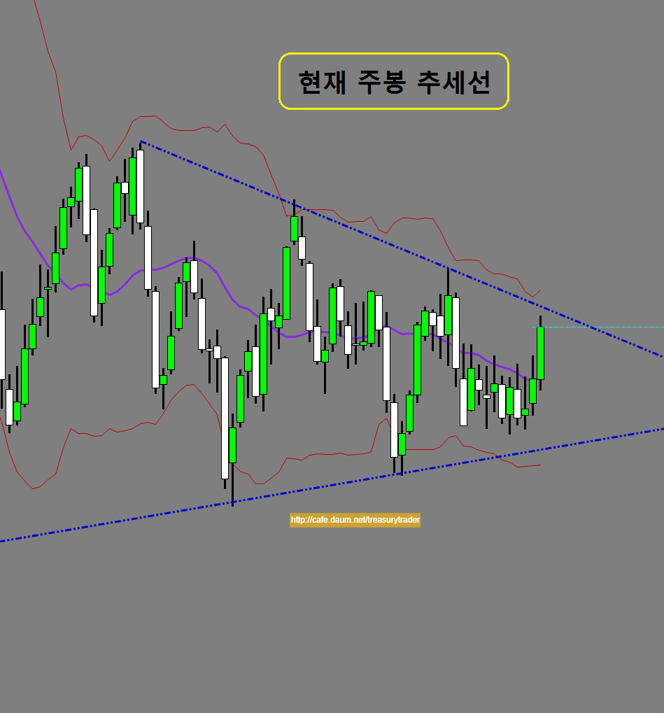
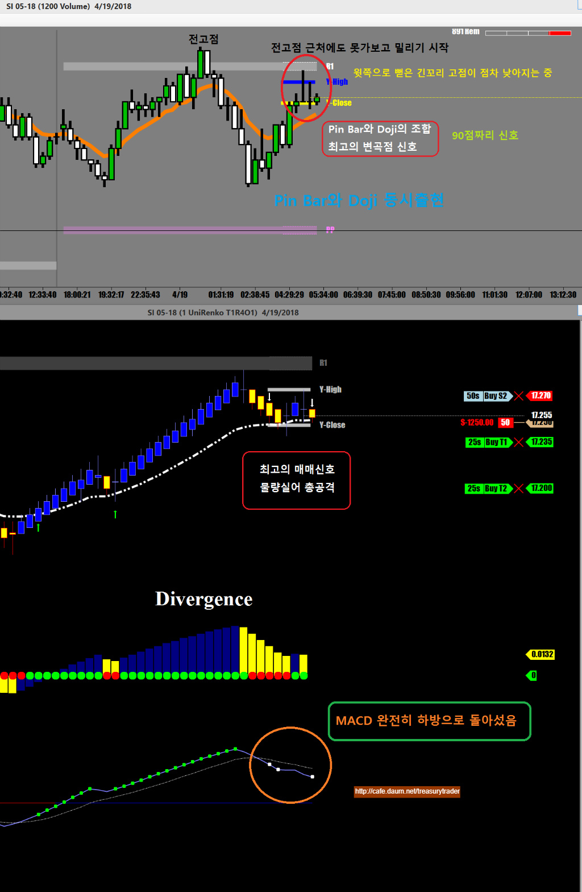
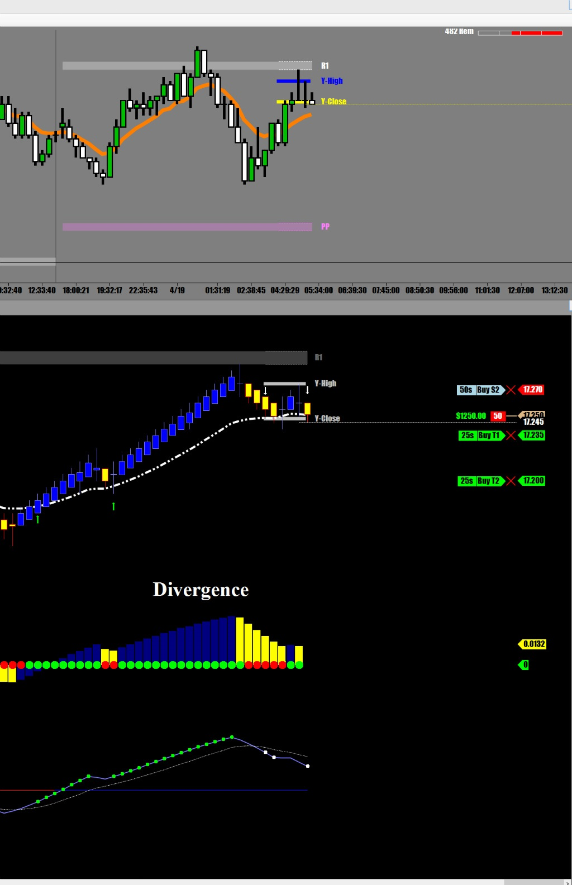
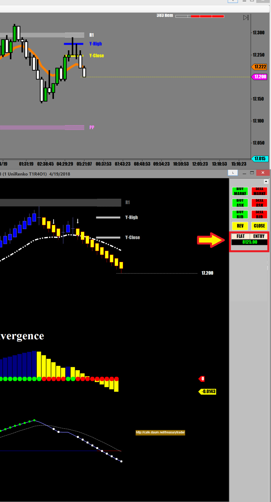
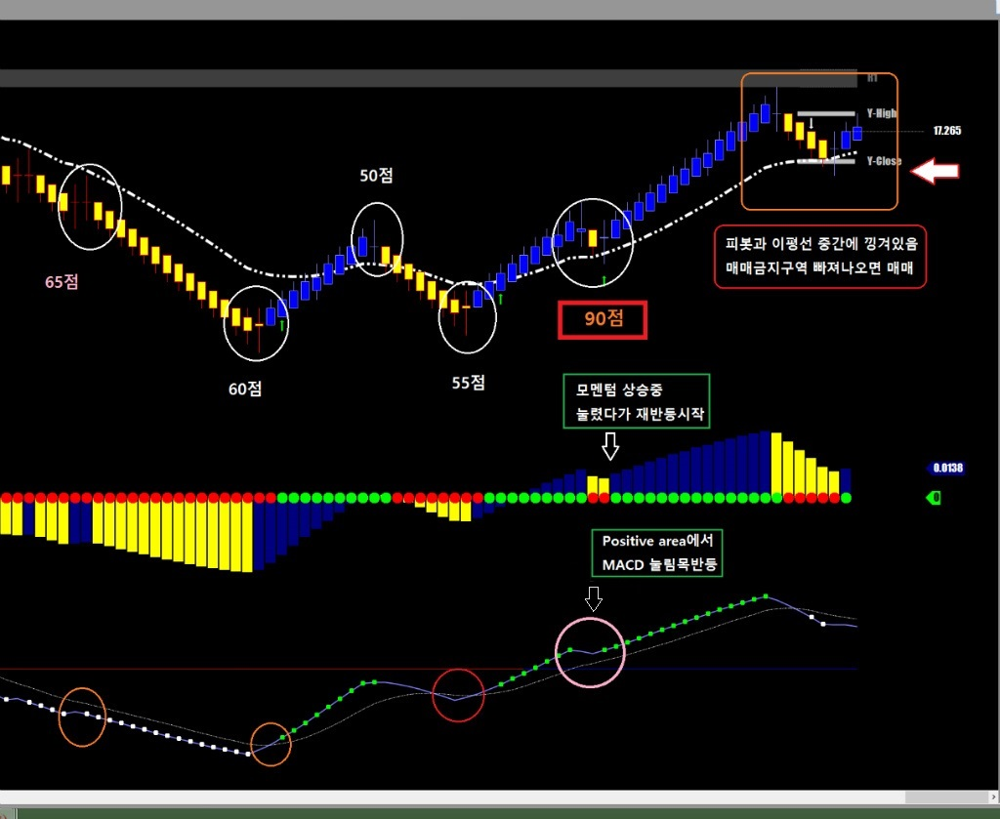

해외선물 - 실버선물 매매
이번주는 트럼프의 러시아 Sanction 덕분에 알루미늄이 완전히 맛이 간 상황에다가
배터리의 주원료인 니켈과 카드뮴 코발트 리티움 등등
거의 모든 광물들이 날아가고 있는 중
덕분에 실버도 어제부터 탄력을 받아 엄청난 상승을 기록하는 중
실버는 장기적으로 볼 때 채광량이 급격히 줄어들고 있어 향후 몇년간 큰 폭의 가격 상승이 예측됨
장기투자자들은 단기 하락할때마다 조금씩 실버를 사놓으면 대박 가능성이 큼
현재 실버 가격은 몇년전 고점 대비 70%나 가격이 할인되어 있는 상황임
현재 주봉상태를 보면 추세선 끝에 바짝 다가선 모습
어제의 상승탄력을 봤을 때 오늘은 추세선까지는 가지 않을까 싶음

하지만 일봉상으로 보면 어제의 긴 장대양봉뒤에 spinning top 상태라서
양방향 모두 심하게 흔들릴 가능성도 있음
스피닝 탑 캔들은 어느쪽으로 갈지 방향이 결정되지 못했다는 신호임
신호 먼저 나오는쪽으로 매매할것임
오늘 첫번째 매매는
카페 매매기법에도 올려놨던
피봇에서 pin Bar와 Doji의 동시출현하는
최고의 매매신호가 떨어지는 바람에
큰 물량으로 공략


물량이 많은 관계로 충분한 수익이 나고 있기 때문에 추격은 그만하고
적당한 선에서 나오기로 함

장중에 챠트를 지켜보다보면 수없이 많은 매매챤스가 나타나는데
그때마다 전부 다 들어갈 수는 없고
챤스때마다 나름대로 점수를 매겨서 자신이 정한 점수 이상의 신호일때만 들어가는게 좋다
또 어제도 설명했듯이 신호의 점수따라 매매물량을 조절하는것이 리스크 관리상 비교적 안전하다 할 수 있겠다
본인의 경우는 최소 70점 이상인 경우에 진입하는걸 원칙으로 하고 있다
점수를 계산하는 방법은 각기 자기나름대로의 기준을 정하면 되겠지만
본인의 경우
1. 피봇의 지지 (저항)에서 발생하는 캔들패턴(pin Bar, Doji, Engulfing(장악형), Morning star(샛별형) 등등
2. 추세진행중 발생하는 눌림목
3. 중요 지지(저항) 돌파 후 조정받았다가 다시 치고 나갈 때
4. MACD 추세진행중 발생하는 눌림목
등등을 기준으로 나름대로 점수를 매긴다
아래 챠트를 보면 캔들 색깔이 바뀌는곳이 매매신호지만
모든 지점마다 점수가 전부 다르다
물론 다른 선물 매매보다가 90점 짜리는 매매를 못했지만
이 상황이라면 당연 90점짜리에서 진입했을것이다

매매하면서 화면 캡쳐하느라 집중도 잘 안되고..ㅋ
그래서 지금 매매동영상으로 제작해보려고
이거 저거 프로그램들 시험중임